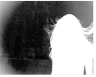
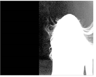
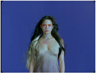
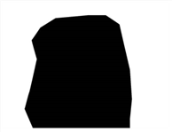

请记住，键控灯有两件事 -- 它消除了屏幕颜色，以消除图像，并生成一个 alpha ( 屏幕 哑光 ) 在背景层上合成前景。
如果你然后处理 屏幕 哑光 例如，通过侵蚀 alpha 或改变剪辑级别，Keylight 将从透明度现在已经改变的像素中删除错误数量的屏幕颜色。的 屏幕 替换 指示 Keylight 如何处理这些像素。的 地位 显示哪些像素使用替换方法。由于 alpha 处理工具修改了透明度而使用替换方法的像素是绿色的，而由内侧磨砂修改了透明度的像素是蓝色的。请参见下的状态视图 视图 .
Replace 方法有四个选项。这些是:
| 1。 | 没有 -如果 alpha 被修改，鄙视图像将保持不变。 |
| 2. | 源 -如果 alpha 改变，图像有相应数量的原始像素 (屏幕颜色和全部) 重新引入/删除。 |
| 3. | 硬 颜色 -被鄙视的图像有相应数量的 屏幕 替换 颜色 增加阿尔法的任何增加。 |
| 4. | 软 颜色 -被鄙视的图像有相应数量的 屏幕 替换 颜色 然而，对于 alpha 的任何增加，它会尝试调节结果像素的亮度，使其与原始像素相匹配。这给出了一个比 硬 颜色 选项。 |
如果屏幕磨砂的变化是由于内部遮罩造成的，则 里面 替换 和 里面 替换 颜色 参数可以用来修改这些区域的颜色，就像 屏幕 替换 上述参数。
内置裁剪工具可快速移除图像边缘的前景部分。它也可以在边缘清理哑光时有用，因为蓝屏的亮度变化很难显示出来。
与 X 方法 和 Y 方法 设置为 颜色 和 边缘 颜色, 设置为纯蓝色 (对于蓝屏)，设置 左 裁剪出图像的左侧，露出背景。下图显示了对 合并 哑光 与裁剪。
|
 |
 |
|
左 = 0。 |
左 = 0.35。 |
计算中使用的内部遮罩输入的分量 (亮度或 alpha 通道)。通常，这是一个垃圾哑光，覆盖了你知道 100% 前景的区域。
|
 |
|
|
蓝屏图像。 |
内部哑光。 |
提示: 为了避免在整个剪辑中旋转内部哑光，您可以将另一个键光节点连接到 InM 输入并使用它来创建一个硬的，扩张的关键 (设置 屏幕扩张 到低值)。
外部遮罩的分量 (亮度或 alpha 通道)。通常，这是一个垃圾哑光，覆盖了你知道是 100% 背景的区域。
|
|
 |
|
蓝屏图像。 |
外面的哑光。 |
|
|